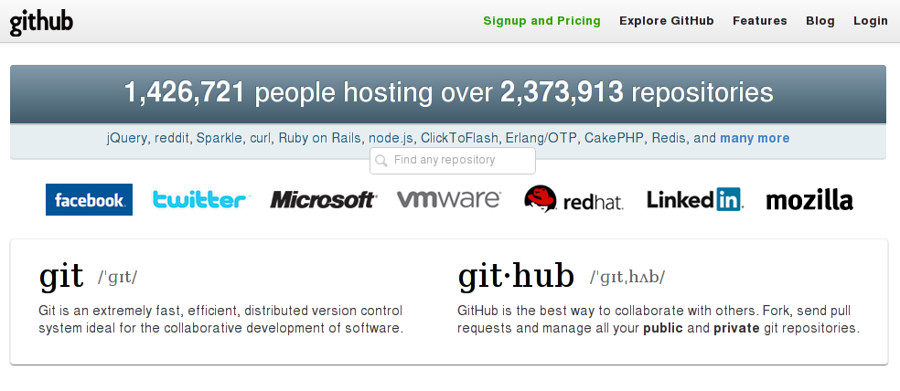

Introducción a Git y Github 
Javier Aguirre
Miguel de la Cruz
13 de Feb de 2012
Cursos GUL - Marzo 2012
Javier Aguirre
Miguel de la Cruz
13 de Feb de 2012
apt-get install git (git-core)
cd miproyecto
git init
git add .
git commit -m 'Primera version'
# O
git clone url_proyecto
git add archivonuevo
git rm archivoviejo
git mv archivoviejo archivonuevo
git log # Lista los últimos commits
git log -n 30 # 30 ultimos commits
git log -p # ultimos cambios en codigo
git log --stat # ultimos cambios en archivos
git checkout archivos
git reset --hard SHA
#Actualiza copia local
git pull repo_remoto rama
#Actualiza copia remota
git push repo_remoto rama
# Creamos un parche con la diferencia
git diff archivos > miarchivo.patch
# Aplicamos el parche en nuestro repo
git apply miarchivo.patch
Hablar de las ramas y esas cosas
Ejemplo entre dos usuarios y cómo se usaría git
Presentación en... github